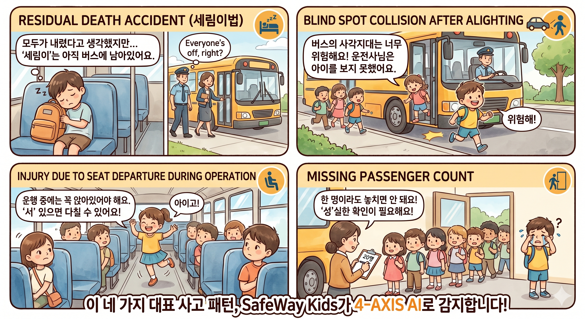

창업자 · 회사 소개
루넨랩스(LunenLabs) 대표 · 1인 창업가
엔터프라이즈 SaaS 개발 경력을 바탕으로 안전·돌봄 영역의 멀티앱 SaaS 포트폴리오를 운영하고 있습니다. SafeWay Kids는 그 중 첫 정부지원사업·규제 샌드박스 트랙을 진행 중인 핵심 사업입니다.
| 사업 형태 | 1인 단독 사업자 — LunenLabs 브랜드 (도메인 보유, 법인 설립 예정) |
| 대표 사업 | SafeWay Kids — 어린이 통학버스 안전 SaaS (B2B) |
| 병행 사업 | PetTracker (B2C, 6월 출시) · CareConnect (개발 중) · SDET Code (해외 B2B) |
| 법무 자문 | 양길모 변호사 (법무법인 조율) — KISED #32399, 의견서 2026-05-02 발급 |
| 이메일 | jhryu115@gmail.com |
해결하는 문제

어린이 통학버스 사고는 매년 반복됩니다. 특히 잔류 사망 사고(세림이법 입법 계기), 하차 후 사각지대 충돌, 운행 중 좌석 이탈로 인한 부상, 승하차 인원 누락이 네 가지 대표 사고 패턴입니다.
기존 솔루션은 GPS 추적 단일 또는 스마트키 기반 단순 알림에 머물러 있고, AI 영상·센서 융합·실시간 알림이 통합된 종합 솔루션은 시장에 부재합니다. SafeWay Kids는 이 네 가지 사고 패턴을 4축 AI로 동시에 자동 감지하고, 학원·학부모·운전기사에게 즉각 알림을 전달하는 종합 안전 SaaS입니다.
AI 4축 안전 솔루션
기술 스택
- 엣지 AI — NVIDIA Jetson + ONNX Runtime · YOLOv8 / ArcFace / MediaPipe FaceDetector
- 백엔드 — Python FastAPI · PostgreSQL 16 · Redis 7 · WebSocket 실시간 스트림
- 프론트엔드 — React Native (Expo SDK 54, 모바일) · React + Vite (웹 대시보드 / 마케팅 사이트)
- 지도 — 카카오맵 JavaScript API · GPS 폴링 + WebSocket 양방향
- 데이터 보안 — AES-GCM 필드 암호화 · OTP 6자리 인증 (만료 5분) · 감사로그 전체 기록 · TLS 1.3
- 인프라 — Docker Compose 로컬 / K8s 매니페스트 작성 완료 / EAS Build (모바일 배포)
법적 컴플라이언스
SafeWay Kids는 코드와 약관을 한 줄로 정렬한 컴플라이언스 우선 설계(Compliance-First Design)를 채택합니다. 아래 4개 법령을 핵심 축으로 두고, 양길모 변호사(법무법인 조율) 의견서로 cross-check를 마쳤습니다.
§18 — 별도 동의 양식 (본 사이트 /location-terms 페이지가 그 본문)
§26-2 — 위치정보관리책임자 지정 (법인 등기 후 실명 등록)
§5 안전성 확보 조치 핵심 카드 — "아동 생체정보(안면 데이터)는 엣지 디바이스에서만 처리, 서버 미전송"이 처리방침에 명문화
고영향 AI 해당 여부 — 양길모 변호사 자문 결과
AI 기본법(인공지능산업 진흥 및 신뢰 기반 조성 등에 관한 법률, 2026 시행)상 SafeWay Kids는 고영향 AI에 해당하지 않습니다 (Q2 답변). 다만 자발적 거버넌스 이중 트랙(투명성 보고서 + 알고리즘 설명 가능성 문서)으로 대응하여 v2.1 §4.6에 명문화했습니다.
오늘 함께 보실 시연 흐름 (15~20분)
데모 환경은 노트북에서 로컬 가동 중입니다. 변호사님께서도 같은 화면을 보시면서 진행됩니다.
- 인사 및 컨텍스트 공유2분 — 본 페이지 훑어보기 + 미팅 의제 정렬
- 승하차 안면인식 시연3분 — Edge AI ① 탭 · 본인 얼굴 등록 → 탑승확인 표시 · "원본 미저장, 512d 벡터만 암호화 저장"
- 이상행동 / 잔류 / 사각지대 시연5분 — Edge AI ②③④ 탭 · 각 30초 시나리오 · "거짓 경고 5% 이하, 운전기사 음성 경고만"
- GPS 실시간 관제3분 — 관제 센터 페이지 · 차량 마커가 5초마다 이동 · "위치정보 운행 종료 후 30일 보관, 이후 자동 익명화"
- 위치정보 이용약관 확인3분 — /location-terms 8개 조 · §3 제3자 제공 표 · §4 보유기간 · §5 권리
- 개인정보처리방침 §5 closing card1분 — "아동 생체정보(안면 데이터)는 엣지 디바이스에서만 처리, 서버 미전송"을 함께 읽기. 코드와 약관이 정합한 closing.
- Q&A · 의견 청취3~5분 — 비용 시뮬레이터·Swagger API 명세는 추가 질문 시 즉석 시연
추가 시연 영역 — 변호사 질문 시 즉응 카드
위 핵심 흐름(안면인식·GPS·약관) 외에도, 변호사 추가 질문에 따라 즉시 띄울 수 있는 4개 영역을 준비했습니다. 모두 로컬 데모 환경에서 동작 중입니다.
관련 문서 · 시연 페이지
아래 카드는 클릭하면 새 탭으로 열립니다 (로컬 데모 환경 가동 중).
연락처
| 창업자 | 류정현 · 1인 단독 사업자 |
| 사업 브랜드 | LunenLabs (도메인 보유, 법인 설립 예정) |
| 이메일 | jhryu115@gmail.com |
| 법무 자문 | 양길모 변호사 · 법무법인 조율 · KISED 자문번호 #32399 |
| 의견서 | 2026-05-02 발급 — Q1 운송계약 / Q2 고영향 AI 미해당 / Q3 정통망법 §44의2 적용 외 |